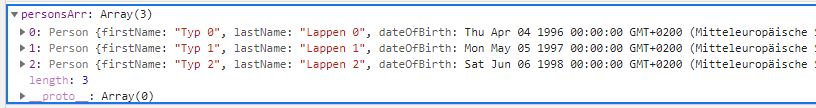
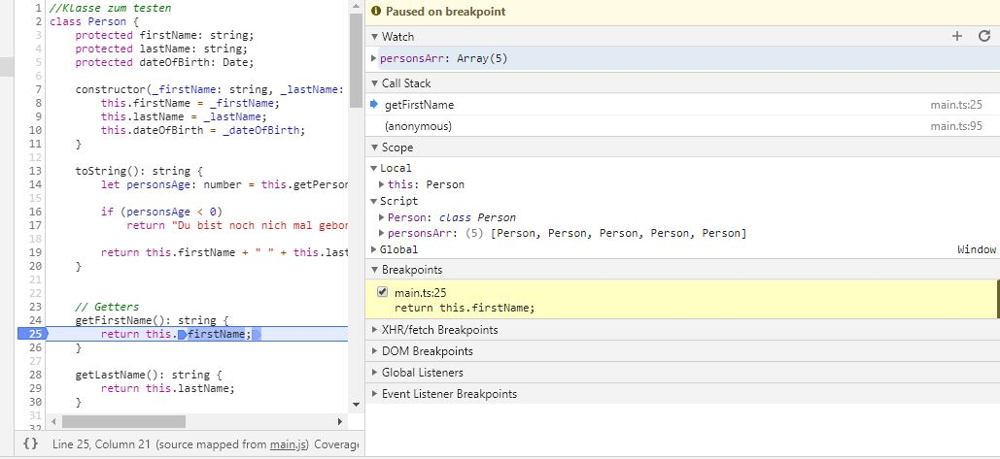
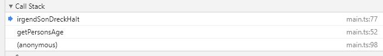
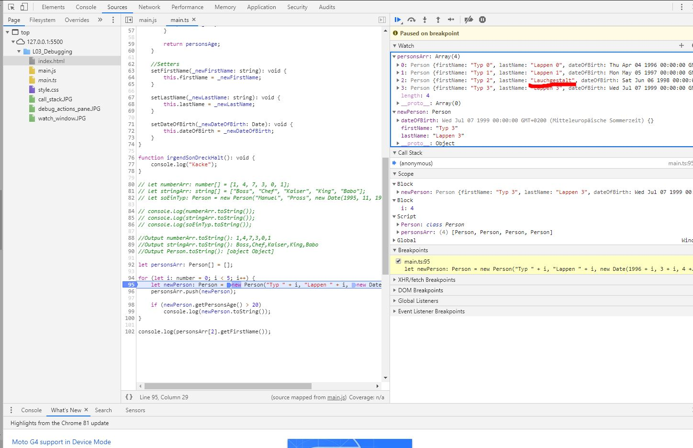

Der Debugger
TODO: Untersucht die weiteren Befehle der Debug actions pane. Was passiert, wenn einer der anderen Buttons gedrückt wird?
TODO: Recherchiert im Internet, wozu die anderen Buttons gut sind und erklärt euch, in welchen Situationen diese nützlich sein könnten.
Debug actions pane im Chrome Browser
Zu finden unter: F12 -> Sources -> main.js -> Breakpoint setzen (Ein Mausklick auf die entsprechende Zeile im Code)
Button-Funktion von links nach rechts
- Pause script execution / Resume script execution: Beendet den aktuellen Debugging-Prozess, beziehungsweise springt zum nächsten Breaktpoint. (Ist nützlich wenn man nicht mehr debuggen will oder in einem Schleifendurchlauf zum nächsten Durchlauf will).
- Step over next function call: Der Debugger springt über Funktion die in der aktuellen Zeile aufgerufen wird (Ist nützlich wenn falls wir schon wissen oder nicht wissen wollen was in der Methode passiert)
- Step into next function call: Der Debugger springt in die Funktion die in der aktuellen Zeile aufgerufen wird (Ist nützlich wenn falls wir nicht wissen oder wissen wollen was in der Methode passiert)
- Step out of current function: Der Debugger springt aus der aktuellen Funktion in die nächste Zeile der übergeordneten (Man arbeitet sich so im Call-Stack nach oben. Ist nützlich wenn wir genug von der Methode gesehen haben)
- Step: Der nächste Schritt im Code wird ausgeführt. Falls eine selbst geschriebene Methode aufgerufen wird, springt der Debugger in deren erste Zeile (Damit kann man sich durch die wichtigsten Schritte des Programms durchhangeln)
- Deactivate breakpoints: Alle Breakpoints werden deaktiviert. Man kann die vorab beschriebenen Befehle weiter ausführen (Damit können wir folgende Breakpoints löschen, falls wir sie nicht mehr benötigen)
- Pause on exceptions: Wird eine Exception geworfen, die nicht abgefangen wird, stoppt der Debugger an disem Codeschnipsel als hätte man dort einen Breakpoint gesetzt (Das ist nützlich falls wir uns erklären wollen warum eine Exception geworfen wird)
TODO: Stoppt den Debugger nach dem Anlegen mehrerer Personen und haltet die Maus über verschiedene Identifizierer oder Variablennamen.
Man kann im Chrome Debugger ebenfalls über bereits durchgeführe Befehle hovern und sich die entsprechenden Inhalte der Variable anschauen
Desweiteren kann man im watch window entsprechende Variablen eingeben, deren Inhalte man überwachen will
Das sind die zwei Möglichkeiten die ich gefunden habe
TODO: Probiert aus, was passiert, wenn ein ganzer Ausdruck wie z.B. person.FirstName markiert wird.
Ich kann hier nichts besonderes feststellen.
TODO: Schreibt Beispielcode, in dem eine innere Methode unter einer bestimmten Bedingung aus einer äußeren Methode aufgerufen wird.
TODO: Setzt einen Breakpoint in der inneren Methode und startet den Debugger
TODO: Betrachtet den Call-Stack und doppelklickt auf die äußere Methode.
TODO: Schaut Euch Variableninhalte und Ausdrücke im Kontext der äußeren Methode im Watch-Fenster an.
Beim hovern über Variablen in der äußeren Methode werden deren Inhalte angezeigt
TODO: Setzt einen Conditional-Breakpoint im Schleifenrumpf der Schleife aus dem ersten TODO

Das ganze funktioniert ähnlich wie in C#. Man kann nach einem Rechtsklick auf den Breakpoint eine Bedingung angeben. Hier habe ich angegeben, dass der Debugger erst stoppen soll, wenn i > 2 ist
TODO: Setzt einen Breakpoint im Schleifenrumpf der Schleife aus dem ersten TODO.
TODO: Verändert den Vornamen des aktuellen Person Objektes.
TODO: Überzeugt Euch durch Inspektion des Listen (bzw. Array)-Inhaltes, dass tatsächlich der Listen-Inhalte überschrieben wurde.
Hier habe ich in einem Durchlauf den Inhalt des Strings: firstName geändert. Nach dem hinzufügen in den Array steht das Objekt auch mit dem entsprechenden Attributwert drin.
TODO: für Fortgeschrittene: Warum kann nicht so einfach beim Debuggen das Geburtsdatum z.B. über die Änderung des im Variable-Fenster angezeigten Geburtsjahres verändert werden? Wie funktioniert es dennoch? Tipp: Im Debugger ausprobieren und die Referenzdoku und den Source-Code von DateTime ansehen. In welcher der vielen Eigenschaften sind überhaupt die eigentlichen Datums-Daten codiert?
Sehr gute Frage... Wie in C# auch funktioniert es in der Chrome Konsole nicht. Hat wohl damit zu tun, dass es ein Objekt aus der Standardlibrary ist. Keine Ahnung ob man das im Debugger verändern kann.
TODO: Erörtert Vorteile und Nachteile printf-Debugging vs. Debugger.
printf-Debugging
Vorteile:
- Keine weiteren Kenntnisse über den Debugger nötig
- Gut für kleiner Probleme (Keine Mehrfachaufrufe, Keine Schleifen, Keine Rekurion)
Nachteile:
- Bei komplexeren Strukturen wird es in der Konsolen-Ausgabe recht unübersichtlich
- Mehr Schreibarbeit
Debugger
Vorteile
- Man kann den Durchgang des Codes individueller steuern
- Man kann sich alle benötigten Varaibleninhalte anzeige lassen
Nachteile
- Für Anfänger ist der Funktionsumfang zu groß
TODO: Wie können zeitabhängige Sachverhalte, z.B. in der Render-Schleife eines Game gedebuggt werden?
Man kann das Auslösen eines Breakpoints sicher auch an ein Zeitevent koppeln.
Übungsaufgabe
Betrachtet die Source-Code-Dateien FamilyTree.cs und Program.cs. In Familytree wird eine Datenstruktur aufgebaut, die eine Art Familienstammbaum repräsentiert (Ähnlichkeiten mit realen Personen sind rein zufällig :-)).
Macht euch klar, dass die Datenstruktur Person rekursiv ist, denn jedes Objekt vom Typ Person referenziert zwei weitere Objekte vom Typ Person, nämlich Mom und Dad.
Die Methdode BuildTree() baut einen Beispiel-Baum auf. Setzt einen Breakpoint in Zeile 19 von Program.cs, startet den Debugger und seht Euch den Inhalt von root im Debugger an.
Die Methode Find() durchläuft rekursiv den Baum und prüft alle Person-Objekte darauf, ob die Bedingung in Zeile 22 gegeben ist. Die erste Person, die die Bedingung erfüllt, wird zurückgeliefert.
Ändert die Bedingung so, dass nicht gleich die erste Person ("Willi") zurückgegeben wird. Eventuell gibt es Abstürze. Analysiert die Abstürze mit dem Debugger, überprüft Variableninhalte und den Call-Stack.
Schreibt komplexere Bedingungen, findet z.B. die erste Person, die in einer Altersspanne liegt, vergleicht dazu person.DateOfBirth.Year mit DateTime.Now.Year. Analysiert mit dem Debugger, ob Eure Bedingung richtig ist.
class Person {
public firstName: string;
public lastName: string;
public dateOfBirth: Date;
public mom: Person;
public dad: Person; //Frage: Warum darf bzw. kann ich hier kein let oder const angeben
constructor(_firstName: string, _lastName: string, _dateOfBirth: Date, _mom: Person, _dad: Person) {
this.firstName = _firstName;
this.lastName = _lastName;
this.dateOfBirth = _dateOfBirth;
this.mom = _mom;
this.dad = _dad;
}
}
class Familytree {
public static find(person: Person): Person {
let ret: Person = null;
if (person == null) // Dass musste ich noch einbauen, weil ich sonst eine nullpointer exception bekomme. Hier ist die Funktion: Pause on Exceptions sehr nützlich
return null;
if (person.dateOfBirth.getFullYear() <= 1882 && person.dateOfBirth.getFullYear() >= 1880)
return person;
ret = Familytree.find(person.mom); //Warum muss ich hier den Klassennamen angeben. Ich ging davon aus, dass man das nur braucht wenn man eine static Methode außerhalb der entsprechenden Klasse aufruft. Im C# Code im Repo ist das auch so
if (ret != null)
return ret;
ret = Familytree.find(person.dad);
return ret;
}
public static buildTree(): Person {
let willi: Person = new Person("Willi", "Cambridge", new Date(1982, 7, 21), null, null);
let diana: Person = new Person("Diana", "Spencer", new Date(1961, 7, 1), null, null);
let franzi: Person = new Person("Franzi", "Roche", new Date(1936, 1, 20), null, null);
let ruth: Person = new Person("Ruth", "Gill", new Date(1908, 6, 7), null, null);
let moritz: Person = new Person("Moritz", "Roche", new Date(1885, 7, 8), null, null);
let eddie: Person = new Person("Eddie", "Spencer", new Date(1924, 1, 24), null, null);
let cynthia: Person = new Person("Cynthia", "Hamilton", new Date(1897, 8, 16), null, null);
let albert: Person = new Person("Albert", "Spencer", new Date(1892, 5, 23), null, null);
let charlie: Person = new Person("Charlie", "Wales", new Date(1948, 11, 14), null, null);
let sarah: Person = new Person("Sarah", "Windsor", new Date(1926, 4, 21), null, null); //else geht leider nicht weil ts/js kein namespacing hat xD
let lisbeth: Person = new Person("Lisbeth", "Bowes-Lyon", new Date(1900, 8, 4), null, null);
let schorsch: Person = new Person("Schorsch-Albert", "York", new Date(1895, 12, 14), null, null);
let philip: Person = new Person("Philip", "Battenberg", new Date(1921, 6, 10), null, null);
let alice: Person = new Person("Alice", "Battenberg", new Date(1885, 2, 25), null, null);
let andi: Person = new Person("Andi", "ElGreco", new Date(1882, 2, 1), null, null);
willi.mom = diana;
diana.mom = franzi;
franzi.mom = ruth;
franzi.dad = moritz;
diana.dad = eddie;
eddie.mom = cynthia;
eddie.dad = albert;
willi.dad = charlie;
charlie.mom = sarah;
sarah.mom = lisbeth;
sarah.dad = schorsch;
charlie.dad = philip;
philip.mom = alice;
philip.dad = andi;
return willi;
}
}
//Main
let rootPerson: Person = Familytree.buildTree();
let found: Person = Familytree.find(rootPerson);
console.log(found);